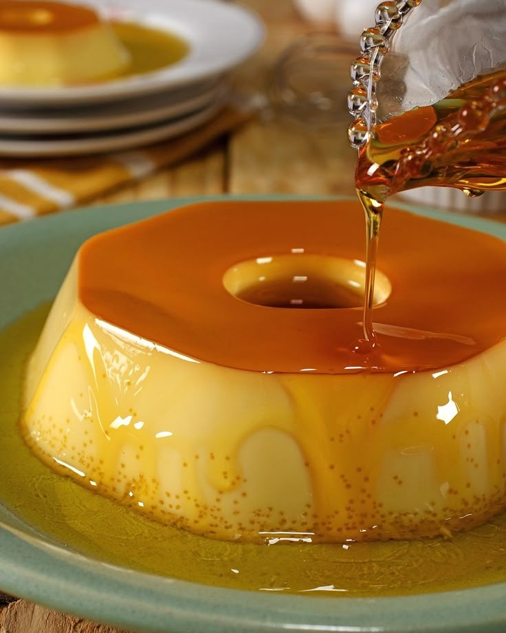

Pudim de Leite
Um pudim cremoso e clássico, perfeito para sobremesas tradicionais que agradam toda a família.

Ingredientes
Rende 8 a 10 porções
- 1 lata de leite condensado
- 2 medidas (da lata) de leite
- 3 ovos
- 1 xícara de açúcar (para caramelizar a forma)
Modo de Preparo
Tempo estimado: 50 minutos
- Caramelize uma forma de pudim com o açúcar e reserve.
- No liquidificador, bata o leite condensado, o leite e os ovos até obter uma mistura homogênea.
- Despeje a mistura na forma caramelizada.
- Leve ao forno em banho-maria, pré-aquecido a 180 °C, por aproximadamente 40 a 50 minutos, ou até firmar.
- Deixe esfriar, desenforme e sirva gelado.
Dica do Chef: Para um pudim ainda mais cremoso, peneire a mistura antes de levar ao forno e deixe na geladeira por algumas horas antes de servir.